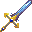
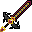

Chasseur de trésors (Farm & butin)
En une phrase : pas le plus fort en combat, mais le plus riche : Treasure Hunter (butin ×3 sur 15 % des kills), chance maximale et XP ×3 de Chiron.
Pour qui ?
Pour celui qui veut alimenter le groupe en loot, XP et matériaux — le « build économie ».
Les 3 choix du début
| Choix | Pick | Pourquoi |
|---|---|---|
| Origine | Goblin (Medieval Origins) | Plus de dégâts, plus de butin sur les monstres, dorures renforcées, rapide ; fragile et petit |
| Classe | Explorer | Boussole/cartes de départ, pas de fatigue en courant |
| Bénédiction | Chiron | XP ×3 ; après le dragon, soins augmentés |
Équipement : quoi chercher
- Chance (Fortunate), XP gagnée (Experienced), vie, armure de base (tu es fragile).
- Gemmes Splendor (chance/XP).
- Une arme rapide (Supreme Nightfall, lames) pour tuer vite.
Talents
Nœuds à viser : Treasure Hunter (15 % de chances de ×3 sur le butin), Elusiveness, esquive et XP par minute côté Chasseur ; complète avec le Mineur (Greed : +1 socket partout) pour un équipement très gemmé.
Boucle de farm
- Va loin du spawn (niveau élevé = plus d'XP : +10 %/niveau), tue vite des monstres infernaux. 2. Récupère les matériaux (Arcane Sands, Godforged Pearl) et la poussière de gemme. 3. Recycle (table de recyclage) ce qui ne te sert pas. 4. Fais profiter le groupe.
Face aux boss
- Pas ton rôle : sers de ravitailleur (potions, nourriture, matériaux) et de second tank léger.
Comment adapter ce build
Catégorie : 💰 Farm & utilité — voir les autres builds de la catégorie.
- À quoi ça sert ? Récolter les ressources et le butin rare pour les autres builds. Change de build quand tu attaques un boss.
- Priorité d'équipement : chance, butin, fortune, vitesse de déplacement, puis PV.
Pour aller plus loin : Adapter un build à son loot · Débutant → Optimisé · charge-le dans le planificateur pour tester tes modifications.
Tes 3 choix en détail
Ce que chaque choix te donne réellement, tiré des fichiers du pack. Les pouvoirs sans chiffre sont décrits à titre indicatif.
Goblin
Rusés et cupides, les gobelins excellent en duel et obtiennent plus de butin sur les monstres qu'ils tuent, mais leur petite taille est un handicap face aux groupes.
- Cunning — Les gobelins sont rusés : leurs attaques font plus de dégâts et ils gagnent plus de butin en tuant des monstres.
- Frail — Être petit a un prix : la vie max des gobelins est réduite, car leur petite taille les rend fragiles.
- Greedy — Les gobelins sont naturellement cupides : tout ce qui est doré leur apporte bien plus d'avantages qu'aux autres.
- Nippy — Petits mais pas lents : les gobelins ont une vitesse de déplacement de base nettement augmentée.
- Stunted — À cause de leur mauvaise alimentation et de leur génétique, les gobelins n'atteignent pas la taille des autres créatures.
Explorer
Les explorateurs se repèrent facilement dans les terrains les plus difficiles et découvrent les lieux cachés.
- Explorer Kit — Tu commences la partie avec une boussole, une horloge et neuf cartes vides.
- Fit — Courir ne te fatigue pas.
Chiron's Blessing
Tu es favorisé par Chiron, le grand centaure guérisseur et enseignant. Tu reçois sa bénédiction avisée.
- Minor Boon of Insight — Chiron te transmet son enseignement : tu gagnes le triple d'expérience de toutes les sources.
- Major Boon of Respite — Après avoir tué l'Ender Dragon, Chiron t'accorde sa suprême maîtrise des soins : soins augmentés de toutes sources, sur-soin (bouclier) et soins périodiques.
Ce que chaque niveau t'apporte
| Débutant | Intermédiaire | Avancé | Optimisé | |
|---|---|---|---|---|
| Vie max | 71 | 169 | 346 | 469 |
| Armure | 24 | 74 | 70 | 57 |
| Esquive | 4 % | 7 % | 75 % | 75 % |
| Dégâts par coup | 11 | 41 | 210 | 637 |
| Critique | 5 % × 1,5 | 5 % × 1,5 | 190 % × 2,9 | 326 % × 5,3 |
| Mana max | 100 | 100 | 100 | 100 |
| Points de talent | 15 | 45 | 100 | 115 |
Avec un loot médian (plus proche de la réalité)
Mêmes équipements, mais chaque affixe à 50 % de sa plage au plus et les gemmes d'une rareté en dessous.
| Débutant | Intermédiaire | Avancé | Optimisé | |
|---|---|---|---|---|
| Vie max | 69 (71) | 166 (169) | 308 (346) | 364 (469) |
| Armure | 24 (24) | 64 (74) | 62 (70) | 56 (57) |
| Dégâts par coup | 11 (11) | 37 (41) | 190 (210) | 467 (637) |
| DPS estimé | 17 (17) | 78 (88) | 4632 (5489) | 184640 (534639) |
Entre parenthèses : valeur du build « parfait ».
Les chiffres augmentent surtout grâce à la rareté de l'équipement, au nombre d'affixes/gemmes et aux points de talent. Ils servent à comparer les niveaux entre eux.
Arbre de talents
Les nœuds en couleur sont ceux à prendre ; choisis le niveau avec les boutons. Molette pour zoomer, glisser pour déplacer, survole un nœud pour lire son effet. départ mineur notable clé de voûte
Fiche chiffrée — Débutant
Équipement visé (Débutant)
| Emplacement | Objet | Affixes de stat (valeur max de la plage) | Gemmes |
|---|---|---|---|
| Arme | Épée en fer (vanilla) Rare dégâts 6 | Violent : +3–4 Dégâts d'attaque | Hearty Jewel |
| Casque | Rare armure 5 | Blessed : +3–6 Vie max | Jewel of the Aether |
| Plastron | Rare armure 7 | Blessed : +3–6 Vie max | Splendor Gem |
| Jambières | Rare armure 6 | Blessed : +3–6 Vie max | Splendor Gem |
| Bottes | Rare armure 5 | Blessed : +3–6 Vie max | Hearty Jewel |
| Anneau 1 | Anneau Rare | Immortal : +7–8,5 % (mult.) Vie max | Splendor Gem |
| Anneau 2 | Anneau Rare | Immortal : +7–8,5 % (mult.) Vie max | Splendor Gem |
Talents choisis (15 points) — départ : classe Chasseur
Skillful Archer · Thick Arms · Healthy Diet
Ouvrir ce build dans le planificateur (onglet « Builds prêts » → Chasseur de trésors (Farm & butin) — Débutant)
Fiche chiffrée — Intermédiaire
Équipement visé (Intermédiaire)
| Emplacement | Objet | Affixes de stat (valeur max de la plage) | Gemmes |
|---|---|---|---|
| Arme |  Azure ThunderÉpique dégâts 19 | Graceful : +20–40 % (mult.) Vitesse d'attaque Violent : +4–6 Dégâts d'attaque | Splendor Gem |
| Casque | Épique armure 9 | Blessed : +3–8 Vie max Fortunate : +0,5–2 Chance | Jewel of the Aether |
| Plastron | Épique armure 11 | Blessed : +3–8 Vie max Fortunate : +0,5–2 Chance | Splendor Gem Splendor Gem |
| Jambières | Épique armure 9 | Blessed : +3–8 Vie max Fortunate : +0,5–2 Chance | Splendor Gem |
| Bottes | Épique armure 7 | Blessed : +3–8 Vie max Fortunate : +0,5–2 Chance | Hearty Jewel |
| Anneau 1 | Anneau Épique | Immortal : +8–10,2 % (mult.) Vie max Healthy : +4–7 Vie max | Reinforced Jewel Reinforced Jewel |
| Anneau 2 | Anneau Épique | Immortal : +8–10,2 % (mult.) Vie max Healthy : +4–7 Vie max | Splendor Gem Splendor Gem |
| Collier | Collier Épique | Immortal : +8–17 % (mult.) Vie max Immortal : +8–10,2 % (mult.) Vie max | Gem of the Incandescent Inferno |
Talents choisis (45 points) — départ : classe Mineur
Safety Helmet · Heavy Strike · Healthy Diet · Cullinan · Life Crystal · Meditation
Ouvrir ce build dans le planificateur (onglet « Builds prêts » → Chasseur de trésors (Farm & butin) — Intermédiaire)
Fiche chiffrée — Avancé
Équipement visé (Avancé)
| Emplacement | Objet | Affixes de stat (valeur max de la plage) | Gemmes |
|---|---|---|---|
| Arme |  Supreme NightfallMythique dégâts 42 | Graceful : +25–45 % (mult.) Vitesse d'attaque Intricate : +20–35 % Chance de critique Lacerating : +20–30 % Dégâts critiques | Splendor Gem Ballast Gem Gem of the Samurai |
| Casque | Mythique armure 9 | Blessed : +3–8 Vie max Fortunate : +1–3 Chance | Jewel of the Blue Skies Gem of the Warlord |
| Plastron | Mythique armure 11 | Blessed : +3–8 Vie max Fortunate : +1–3 Chance | Splendor Gem Splendor Gem Splendor Gem |
| Jambières | Mythique armure 9 | Blessed : +3–8 Vie max Fortunate : +1–3 Chance | Splendor Gem Splendor Gem |
| Bottes | Mythique armure 7 | Blessed : +3–8 Vie max Fortunate : +1–3 Chance | Slipstream Gem Hearty Jewel |
| Anneau 1 | Anneau Mythique | Immortal : +9–13 % (mult.) Vie max Healthy : +5–9 Vie max Intricate : +20–23,8 % Chance de critique | Reinforced Jewel Brawler's Gem Splendor Gem |
| Anneau 2 | Anneau Mythique | Immortal : +9–13 % (mult.) Vie max Healthy : +5–9 Vie max Intricate : +20–23,8 % Chance de critique | Splendor Gem Splendor Gem Splendor Gem |
| ring3 | Mythique | — | — |
| Collier | Collier Mythique | Immortal : +9–25 % (mult.) Vie max Immortal : +9–13 % (mult.) Vie max Intricate : +20–23,8 % Chance de critique | Splendor Gem Brawler's Gem |
| Ceinture | Ceinture Mythique | Immortal : +9–13 % (mult.) Vie max Experienced : +40–43,8 % XP gagnée Intricate : +20–23,8 % Chance de critique | Brawler's Gem Brawler's Gem |
| Dos | Cape/Dos Mythique | Immortal : +9–13 % (mult.) Vie max Lucky : +5–6,5 % Chance Intricate : +20–23,8 % Chance de critique | Brawler's Gem Brawler's Gem |
| Charme | Charme Mythique | Immortal : +9–13 % (mult.) Vie max Experienced : +40–43,8 % XP gagnée Blessed : +3–4,25 Vie max | Splendor Gem Splendor Gem |
Talents choisis (100 points) — départ : classe Chasseur
Will to Survive · Polishing · Life Crystal · Safety Helmet · Cullinan · Aristocrat · Star Shards · Heavy Strike · Healthy Diet · Runic Blade · Fat Body · Spicy Meal · Energy Reserve · Spiked Rings · Gutting · Cursed Stone · Light Crystals · Precious Weapon · Backstab · Animate Weapon · Estrela de Fura · Haste · Discoverer
Ouvrir ce build dans le planificateur (onglet « Builds prêts » → Chasseur de trésors (Farm & butin) — Avancé)
Fiche chiffrée — Optimisé (BiS)
Équipement visé (Optimisé (BiS))
| Emplacement | Objet | Affixes de stat (valeur max de la plage) | Gemmes |
|---|---|---|---|
| Arme | Supreme Nightfall Mythique dégâts 42 | Intricate : +20–35 % Chance de critique Graceful : +25–45 % (mult.) Vitesse d'attaque Lacerating : +20–30 % Dégâts critiques Violent : +4–6 Dégâts d'attaque | Gem of the Samurai Brawler's Gem Brawler's Gem Gem of the Warlord |
| Casque | Mythique armure 9 | Fortunate : +1–3 Chance Blessed : +3–8 Vie max | Jewel of the Blue Skies Gem of the Warlord Gem of the Warlord |
| Plastron | Mythique armure 11 | Fortunate : +1–3 Chance Blessed : +3–8 Vie max | Splendor Gem Splendor Gem Splendor Gem Splendor Gem |
| Jambières | Mythique armure 9 | Ironforged : +2–4 Armure Fortunate : +1–3 Chance Blessed : +3–8 Vie max | Splendor Gem Splendor Gem Splendor Gem |
| Bottes | Mythique armure 7 | Steel Touched : +2–4 Robustesse d'armure Ironforged : +2–4 Armure Fortunate : +1–3 Chance Blessed : +3–8 Vie max | Slipstream Gem Hearty Jewel Hearty Jewel |
| Anneau 1 | Anneau Mythique | Intricate : +20–23,8 % Chance de critique Experienced : +40–43,8 % XP gagnée Lacerating : +20–22,5 % Dégâts critiques Immortal : +9–13 % (mult.) Vie max | Jewel of the Aether Gem of the Ravenous Blood Lord Splendor Gem Splendor Gem |
| Anneau 2 | Anneau Mythique | Intricate : +20–23,8 % Chance de critique Experienced : +40–43,8 % XP gagnée Lacerating : +20–22,5 % Dégâts critiques Immortal : +9–13 % (mult.) Vie max | Gem of the Ravenous Blood Lord Splendor Gem Splendor Gem Splendor Gem |
| ring3 | Mythique | — | — |
| Collier | Collier Mythique | Immortal : +9–25 % (mult.) Vie max Intricate : +20–23,8 % Chance de critique Experienced : +40–43,8 % XP gagnée Lacerating : +20–22,5 % Dégâts critiques | Gem of the Ravenous Blood Lord Splendor Gem Splendor Gem |
| Ceinture | Ceinture Mythique | Intricate : +20–23,8 % Chance de critique Lacerating : +20–22,5 % Dégâts critiques Immortal : +9–13 % (mult.) Vie max Violent : +4–6 Dégâts d'attaque | Gem of the Ravenous Blood Lord Splendor Gem Splendor Gem |
| Dos | Cape/Dos Mythique | Intricate : +20–23,8 % Chance de critique Lucky : +5–6,5 % Chance Lacerating : +20–22,5 % Dégâts critiques Immortal : +9–13 % (mult.) Vie max | Gem of the Ravenous Blood Lord Gem of the Samurai Splendor Gem |
| Corps | Corps Mythique | Intricate : +20–23,8 % Chance de critique Lucky : +5–6,5 % Chance Lacerating : +20–22,5 % Dégâts critiques Immortal : +9–13 % (mult.) Vie max | Gem of the Ravenous Blood Lord Gem of the Samurai Splendor Gem |
| Mains | Gants Mythique | Intricate : +20–23,8 % Chance de critique Lucky : +5–6,5 % Chance Lacerating : +20–22,5 % Dégâts critiques Immortal : +9–13 % (mult.) Vie max | Gem of the Ravenous Blood Lord Splendor Gem Splendor Gem |
| Bracelet | Bracelet Mythique | — | Gem of the Ravenous Blood Lord Splendor Gem Splendor Gem |
| Talisman | Talisman Mythique | Intricate : +20–23,8 % Chance de critique Lacerating : +20–22,5 % Dégâts critiques Immortal : +9–13 % (mult.) Vie max Violent : +4–6 Dégâts d'attaque | Splendor Gem Splendor Gem Splendor Gem |
| Charme | Charme Mythique | Intricate : +20–23,8 % Chance de critique Lacerating : +20–22,5 % Dégâts critiques Immortal : +9–13 % (mult.) Vie max Violent : +4–6 Dégâts d'attaque | Splendor Gem Splendor Gem Splendor Gem |
Talents choisis (115 points) — départ : classe Chasseur
Will to Survive · Polishing · Life Crystal · Safety Helmet · Cullinan · Iron Shell · Cursed Stone · Precious Weapon · Estrela de Fura · Aristocrat · Star Shards · Runic Blade · Spiked Rings · Gutting · Light Crystals · Heavy Strike · Healthy Diet · Fat Body · Spicy Meal · Backstab · Energy Reserve · Animate Weapon · Reaper
Ouvrir ce build dans le planificateur (onglet « Builds prêts » → Chasseur de trésors (Farm & butin) — Optimisé (BiS))